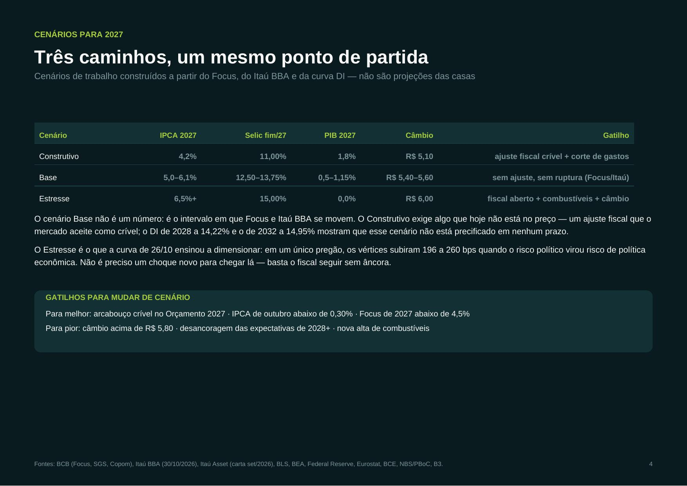

Juros, inflação, PIB e o fato relevante de outubro — com o Focus de 06/11, o cenário do Itaú BBA de 30/10 e a leitura da Itaú Asset.
O Copom manteve a Selic em 13,75% em 04/11 — o mercado esperava corte, e a decisão foi lida como surpresa. O IPCA de 12 meses está em 4,58%, no teto do intervalo de tolerância, mas o Focus já projeta 5,22% para 2026 e 4,90% para 2027.
| Indicador | Focus (06/11) | Itaú BBA (30/10) | Itaú Asset / leitura |
|---|---|---|---|
| IPCA 2026 | 5,22% | 5,2% | — |
| IPCA 2027 | 4,90% | 6,1% | risco de alta |
| Selic fim de 2026 | 13,75% | 13,75% | — |
| Selic fim de 2027 | 12,50% | 13,75% | juro alto por mais tempo |
| PIB 2026 | 1,75% | 1,6% | atividade fraca |
| PIB 2027 | 1,15% | 0,5% | desaceleração |
| Câmbio fim de 2026 | R$ 5,35 | R$ 5,40 | — |
| Câmbio fim de 2027 | R$ 5,40 | R$ 5,60 | prêmio de risco |
A divergência é toda de 2027: o Focus ainda embute corte de juros e IPCA de 4,90%; o Itaú BBA retirou os cortes e vê 6,1%, com Selic a 13,75% do começo ao fim do ano. O Itaú Asset não publica número fechado — na carta do fundo Artax aponta os mesmos riscos (El Niño, fim da escala 6x1, reforma tributária e câmbio) e diz que os trade-offs da política monetária "podem ser muito difíceis".
A curva já diz isso. DI jan/2028 em 14,22%, jan/2032 em 14,95% e jan/2037 em 14,94% (09/11) — acima da Selic em todos os prazos: prêmio por risco fiscal, não por ciclo de juros.
1,2 p.p. de diferença no IPCA de 2027 ≈ R$ 90 bi de juros extras na dívida e um ano inteiro sem espaço para cortar a Selic.
Cenários de trabalho construídos a partir do Focus, do Itaú BBA e da curva DI — não são projeções das casas.
| Cenário | IPCA 2027 | Selic fim/27 | PIB 2027 | Câmbio | Gatilho |
|---|---|---|---|---|---|
| Construtivo | 4,2% | 11,00% | 1,8% | R$ 5,10 | ajuste fiscal crível + corte de gastos |
| Base | 5,0–6,1% | 12,50–13,75% | 0,5–1,15% | R$ 5,40–5,60 | sem ajuste, sem ruptura (Focus/Itaú) |
| Estresse | 6,5%+ | 15,00% | 0,0% | R$ 6,00 | fiscal aberto + combustíveis + câmbio |
O Base não é um número: é o intervalo em que Focus e Itaú BBA se movem. O Construtivo exige algo que hoje não está no preço — o DI de 2028 a 14,22% e o de 2032 a 14,95% mostram que nenhum prazo embute esse cenário. O Estresse é o que a curva de 26/10 ensinou a dimensionar: 196 a 260 bps em um pregão quando o risco político virou risco de política econômica.

EUA sem espaço para cortar, Europa em ciclo de alta por choque de oferta, China sem inflação no consumidor.
Fed parado, com dois votos pedindo alta
BCE subindo, inflação de volta a 4%
PIB no alvo, deflação no consumidor
2º turno em 25/10 e reeleição confirmada em 26/10: o mercado desfez em um pregão o que havia feito no 1º turno.
Em 04/10, o 1º turno havia produzido o movimento oposto: curva −90 a −140 bps e Ibovespa a 200 mil pontos. O Copom de 04/11 respondeu mantendo a Selic, e o Focus de 06/11 já incorpora parte disso. Fora do Brasil, os fatos de outubro foram o FOMC de 28/10 (duas dissidências por alta), o HICP europeu a 4,0% e o PPI chinês a +5,7% com CPI a 0,7%.
Mesmo conteúdo nos dois formatos: o PDF é a versão de leitura, o PPTX é o editável (9 páginas/slides).